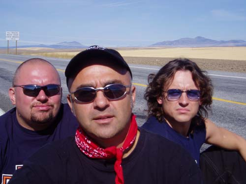
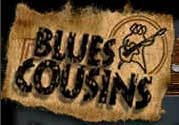

За 13 лет существования, группа Blues Cousins успела завоевать, не только признание Московской аудитории, но и отличилась на международной арене, будучи названной лучшей группой года на фестивале Blues Sur Seine 2000 (Франция). Blues Cousins является частым участником фестивалей и туров по Финляндии, Македонии, Чехии, Франции, США. Летом 2004 года Blues Cousins совершили трехмесячный тур по США. В рамках которого выступили в качестве хедлайнера на фестивалях: Mountbaker Blues Fest, Rockcut Blues Fest, Kettle River Blues Fest, Pig Out Blues Fest
Лидер группы - Леван Ломидзе официально признан одним из 10-ти лучших гитаристов России. Дискография Blues Cousins состоит из шести сольных альбомов, последний из которых "Live in USA" записан в США, и более 10-ти сборников. По оценке "The Moscow Times" Blues Cousins - самая востребованная группа в Московских клубах - группа дает от 17 до 25 концертов в месяц.
